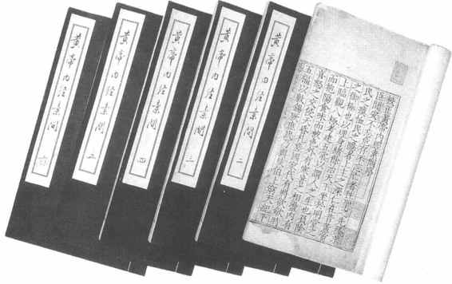
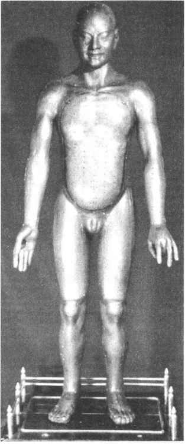

在中国古代科学的各分支中，未被近现代科学所融会，且至今仍有强烈生命力的，唯有传统的中国医药学。其所以能够如此，原因之一是它拥有自己的理论、方法和内容，即形成一个完善的科学体系。中国古代科学的其他分支，虽然也各具鲜明的中国特色，也可说是各有体系，但与中医药学相比较，都不如它那么完整和完善。
中医药学体系是以中国古代盛行的阴阳五行学说，来说明人体的生理现象和病理变化，阐明其间的关系，并将生理、病理、诊断、用药、治疗、预防等有机地结合在一起，形成了一个整体的观念和独特的理论，作为医药学的基础。其内容包括以脏腑、经络、气血、津液为基础的生理、病理学；以望、闻、问、切“四诊”进行诊断，以阴阳、表里、虚实、寒热“八纲”进行归纳治疗的一整套临床诊断和辨证施治的治疗学；以寒、热、温、凉“四气”和酸、甘、苦、辛、咸“五味”来概括药物性能的药物学；以“君臣佐使”、“七情和合”进行药物配伍的方剂学；以经络、腧穴学说为主要内容的针灸治疗学；此外还有推拿、气功、导引等独特的治疗方法。这个体系创立于春秋战国时期，早期阶段的成就以《内经》、《伤寒论》、《神农本草经》等著作为代表，经历代不断发展和完善，成为中国文化史上一份极其宝贵的遗产。（图17—10）

图17-10 明嘉靖赵府居敬堂刻本《黄帝内经素问》书影
从世界医药学史的角度看，中医药学不但体系独特，而且有着一系列卓越的贡献。其中突出的有：
在医学理论方面，中医药学虽然以人体为对象，但是它把人体看做是自然界整体的一部分，不是孤立地研究人体，而是把人体放在自然界整体运动和广阔的动态平衡之中来进行研究。因此，在其病理学说中，非常重视疾病与人体自身精神状态、生活状态以及外部环境，特别是气候变化的关系。在临床治疗中，它反对单纯的头痛医头，脚痛医脚，强调“治病必求于本”［24］的原则，即把握住疾病的原因和本质，针对不同的情况进行辨证施治。同时，它又把人体本身看做一个有机的整体，不是简单、孤立地研究疾病的症候，而是把各脏腑、经络、气血、津液等紧密地联系在一起，进行全面的考察。在用药方面，它讲究药物配伍的原则，即根据每个病人虚、实、寒、热的特性，因人施药，并注意主治药物和辅助性药物的配伍问题。这些理论和原则，即使用现代科学观点和方法来加以考察，亦是非常深刻和具有积极意义的。
脉诊，是中医药学上一项独特的诊断方法。据《史记》记载，战国时的扁鹊已能通过脉诊确定病人的病情，然后对症下药，反映了当时已掌握了脉诊的方法。从此，脉诊成为中医药学的一个重要组成部分。脉诊的应用表明，中国古代的医生已掌握了脉象与身体各部分的关系的经验，亦即关于心脏、血液与血管的关系，血流速度与人体健康的关系，呼吸和脉搏频率的关系等解剖生理学的知识。现代医学表明，脉搏是循环机能的综合表现，脉象因循环系统的情况改变而不同。而且，由于循环系统与身体各内脏都有关联，组织代谢的任何变化，都会给血液循环以一定影响，机体的重要疾病变化，都会在不同程度上影响循环系统的功能。因此，尽管中国古代脉诊是建立在经验基础上的，但却是有着科学依据的。中国的脉诊很早就传到国外，除邻近的日本、朝鲜等国外，大约在10世纪时已传至阿拉伯，17世纪时传至欧洲，对世界医学的发展有着一定的影响。
在外科学方面，与西医只重视局部和体表的医治方法不同，中医坚持了整体的观念，既重视体表疾患的局部表现，更重视患者机体的内在变化；既重视手术、手法的治疗，更重视机体抗病能力的增强。这一思想，在骨科治疗中体现得更为突出。因此，在治疗过程中不仅注意了局部的处理，而且强调适当的活动和功能锻炼，同时配合活血化瘀和调理脏腑功能的药物，收到了良好的疗效。麻醉药物的发明，是中医外科的又一重大成就。据《后汉书》记载，东汉名医华佗已在外科手术中应用了麻醉药——麻沸散。麻沸散的药物组成早已失传，据现代研究，它可能与宋代窦材《扁鹊心书》、元代危亦林《世医得效方》、明代李时珍《本草纲目》中所记载的睡圣散、草乌散、蒙汗药相类似。这些方子的主要药物成分是曼陀罗花，具有麻醉作用。即使不算华佗的麻沸散，宋、元、明三代所用的麻醉药也是世界最早的发明。国外直至1805年，日本的华冈青州方使用以曼陀罗花为主的麻醉剂，被誉为世界外科学麻醉史上的首创，实际上比中国要晚得多。
针灸是中国独创性的一种治疗方法，其特点是在病人身体的一定部位用针刺入，或用火的温热烧灼局部位置，以达到治病的目的。这一疗法大约起源于新石器时代，周代以后逐渐形成为一项专门的治疗方法。针灸疗法的理论基础是经络学说。在长沙马王堆汉墓出土的周代古医籍中，有《足臂十一脉灸经》、《阴阳十一脉灸经》等帛书，反映了当时经络学说已基本确立。在《黄帝内经》中，又进一步把人体的主要经脉总结为12条，并对每条经脉的循行部位，以及经脉和疾病、治疗的关系进行了总结。经络学说认为，经络遍布于人体各部位，不仅分布在体表，而且进入体内与各脏腑相联结，并周而复始地循环运行，担负着运送全身气血，沟通身体内外、上下的功能。在经络学说的基础上，又演化出腧穴的认识。腧穴都处在经脉运行的径路上，分布于身体表面的特定部位，针灸这些部位，可经由经络对身体起刺激作用，进而调整人体内部的机能，增强防病能力，达到治病的效果。（图17—11）由于针灸疗法简便易行，经济实用，适应症广，治疗效果比较迅速和显著，特别是具有良好的兴奋身体机能，提高抗病能力和镇静、镇痛等作用，没有或极少副作用，又可协同其他疗法进行综合治疗，因此深受人们的欢迎。针灸疗法早在汉唐时就传到日本、朝鲜等国，宋元后又相继传到阿拉伯和欧洲，至今仍受到国内外的重视。

图17-11 宋代天圣铜人模型（明代复原品）
中国还是免疫学的发祥地，免疫思想很早就已萌发。公元4世纪初，葛洪所著的《肘后方》中记有“疗猘犬咬人方”，即当人被狂犬咬伤后，把咬人的狂犬杀掉，取狂犬的脑子敷贴于伤口上，以防治狂犬病。19世纪时法国著名医学家巴斯德（Louis Pasteur, 1822—1895）防治狂犬病的疗法，也是基于利用狂犬的病毒以增强免疫力。隋代的巢元方在《诸病源候论》中又指出，服用“沙虱”（恙虫幼虫，形似小红蜘蛛，可传播恙虫病）研成的细末，可治疗恙虫病。国外直至20世纪初，才在感染该病毒的鼠类中获得病原，制成疫苗。中国古代在免疫学上最突出的贡献，是关于天花的防治，发明了人痘接种法。该法是取少许天花患者的痘浆或痘痂，植入健康儿童的鼻孔中，使其感染轻度天花，而获得免疫力。种痘法发明于何时，现说法不一，有说是始于宋代的，有说是始于明代的，但至迟在16世纪下半叶已经使用，则是无疑的。大约在16世纪末，中国的人痘接种法传到俄国，继之又传入欧洲，对保护儿童的健康做出了重大的贡献。公元1796年英国医生琴纳（Edward Jenner, 1749—1823）发明牛痘接种法后，方逐渐代替了人痘接种法。
在药物学方面，中药也具有非常显著的特色，它在药物的自然属性和在人体内的治疗作用的基础上，总结出了一套独特的理论系统，并形成了一套独特的药物炮制和配方用药方法。中国古代关于药物和方剂的专著很多，其中唐《新修本草》是世界上第一部国家发布的药典，明代李时珍的《本草纲目》更可堪称古代世界的药物大全。
此外，在妇科、儿科、法医学以及食物医疗保健等方面，中国古代也都有着很多重大的成就。其中，宋代宋慈所著的《洗冤集录》是世界上第一部系统的法医学专著，在法医学史上占有重要的地位。